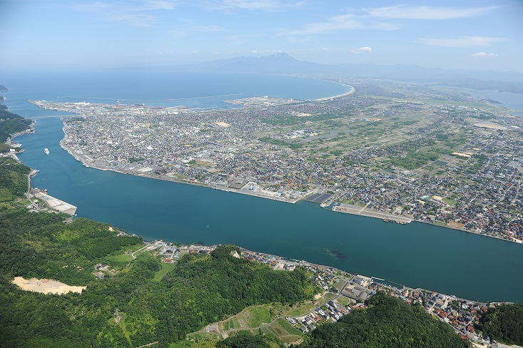

カテゴリ
暮らしとまちの論点を8分野に整理。

About
境港市は、日本海・境水道・中海に囲まれた港町であり、国内屈指の漁港、 水木しげるロードを中心とする観光、米子鬼太郎空港や港湾を活かした交流拠点など、 小さな面積の中に多様なテーマが集まるまちです。
暮らしとまちの論点を8分野に整理。
市民・事業者・行政が話し合える題材に展開。
観光だけでなく、暮らしと未来を一緒に発信。
Focus
「さかなと鬼太郎のまち」という強い個性に加えて、人口、交通、防災、 子育て、医療、環境、議会など、まちを支えるテーマを横断的に扱います。
Themes
100のテーマは、1つずつ内容を育てながら公開していきます。 まずは第1テーマをクリックして、詳細をご覧ください。
Click Theme
左の「001 境港市の人口」をクリックすると、テーマの中身が表示されます。
Theme 001
人口は、子育て、産業、交通、防災、福祉など、あらゆるテーマの土台になる数字です。
境港市の人口がどのように変化しているのかを見ながら、 まちの規模、暮らしの単位、将来必要になる支援や仕事を考えます。 数字を入口に、現場で感じる暮らしの実感とつなげていきます。
2026年5月末の人口31,714人、世帯数15,456世帯を見ると、 1世帯あたりの人数はおよそ2.05人です。人口そのものだけでなく、 世帯が小さくなっている可能性にも注目すると、単身高齢者、子育て世帯、 移動手段、見守り、住宅政策などを一体で考える必要が見えてきます。
町別人口、年齢別人口、過去数年の推移グラフを追加し、 「どこで、どんな変化が起きているか」が一目でわかる記事に育てます。
How to use
Sources
このページの構成は、境港市公式サイト、境港観光協会公式サイト、 水木しげるロード関連情報を参考に、ホームページ用の紹介文として再構成しています。